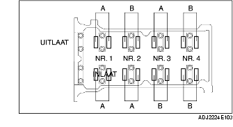

CONTROLE KLEPSPELING [ZJ, Z6]
B3E011012111W01
1. Verwijder de accukap.
2. Neem de minkabel van de accu los.
3. Verwijder de beschermplaat en het spatscherm (rechts).
4. Verwijder het desbetreffende deel van het luchtfilter. (Europa (LHD)) (Zie VERWIJDEREN/PLAATSEN LUCHTINLAATSYSTEEM [ZJ, Z6].)
5. Verwijder het luchtfilterdeksel en trek het luchtfilterhuis opzij maar neem de stekker van de PCM niet los. (GB) (Zie VERWIJDEREN/PLAATSEN LUCHTINLAATSYSTEEM [ZJ, Z6].)
6. Verwijder de bobines. (Zie VERWIJDEREN/PLAATSEN BOBINES [ZJ, Z6].)
7. Neem de carterventilatieslang los.
8. Verwijder het kleppendeksel.
9. Meet de klepspeling.
-
(1) Draai de krukas rechtsom tot cilinder nr. 1 in BDP aan het einde van de compressieslag staat.
-
(2) Meet de klepspeling bij A in de afbeelding.

-
• Vervang de klepstoter als deze niet aan de specificatie voldoet, en stel de klepspeling af op de gemiddelde waarde. (Zie AFSTELLEN KLEPSPELING [ZJ, Z6].)
-
Standaard klepspeling [motor koud]
-
0,27-0,33 mm {0,0107-0,0129 in}
-
Aanwijzing
-
• Noteer de gemeten waarden zodat de juiste klepstoters gekozen kunnen worden.
-
(3) Draai de krukas 360° rechtsom zodat cilinder nr. 4 in BDP aan het einde van de compressieslag staat.
-
(4) Meet de klepspeling bij B in de afbeelding.
-
• Vervang de klepstoter als deze niet aan de specificatie voldoet, en stel de klepspeling af op de gemiddelde waarde. (Zie AFSTELLEN KLEPSPELING [ZJ, Z6].)
-
Standaard klepspeling [motor koud]
-
0,27-0,33 mm {0,0107-0,0129 in}
-
Aanwijzing
-
• Noteer de gemeten waarden zodat de juiste klepstoters gekozen kunnen worden.
10. Plaats het kleppendeksel. (Zie Aanwijzing voor plaatsen - kleppendeksel.)
11. Sluit de carterventilatieslang aan.
12. Plaats de bobines. (Zie VERWIJDEREN/PLAATSEN BOBINES [ZJ, Z6].)
13. Plaats het desbetreffende deel van het luchtfilter. (Zie VERWIJDEREN/PLAATSEN LUCHTINLAATSYSTEEM [ZJ, Z6].)
14. Plaats de beschermplaat en het spatscherm (rechts).